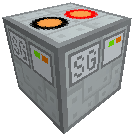
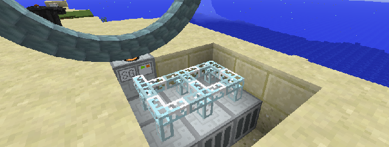
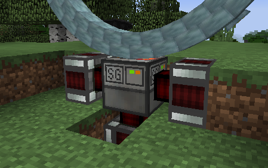

Power Units
Stargate Power Units allow stargates to be run from the power systems of other mods instead of
requiring naquadah.
The Power Unit should be installed below the stargate, under the base block or one of the bottom row of ring blocks.
It will take some time to charge up. Right-click to open a GUI showing
the current charge level.
Energy stored in a Power Unit cannot be drained out. However, it
retains its charge when picked up, so you can move it from one place to
another without losing energy.
Very long-range connections may require energy exceeding the maximum
capacity of a single power unit. To accommodate this, you can install
multiple power units under the gate. There is room for up to 5 units,
although you shouldn't need more than 3 under most conceivable
circumstances.
IC2 Stargate Power Unit
This power unit is available when IndustrialCraft 2 is installed. It contains a capacitor bank to provide the large burst of
energy needed to establish a stargate connection. It can be connected
to a supply of unlimited voltage and holds up to 1,000,000 EU.

RF Power Unit
This power unit is available when Thermal Expansion is installed, and
allows a stargate to be run on Redstone Flux. It can hold up to
4,000,000 RF.
